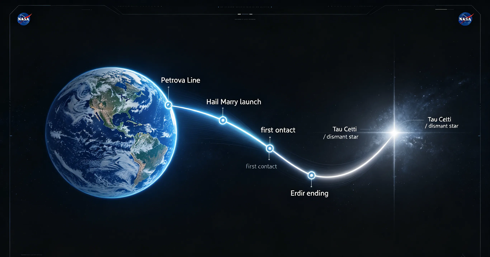
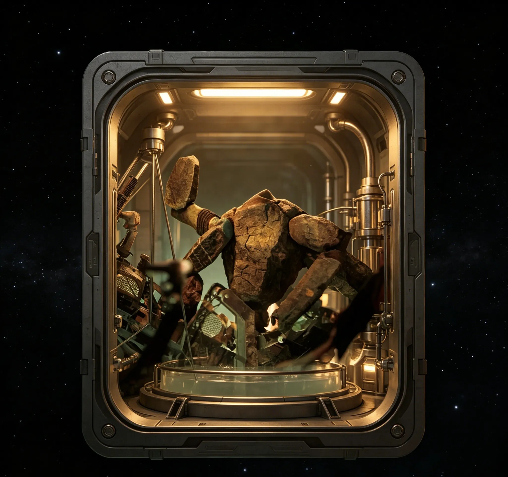
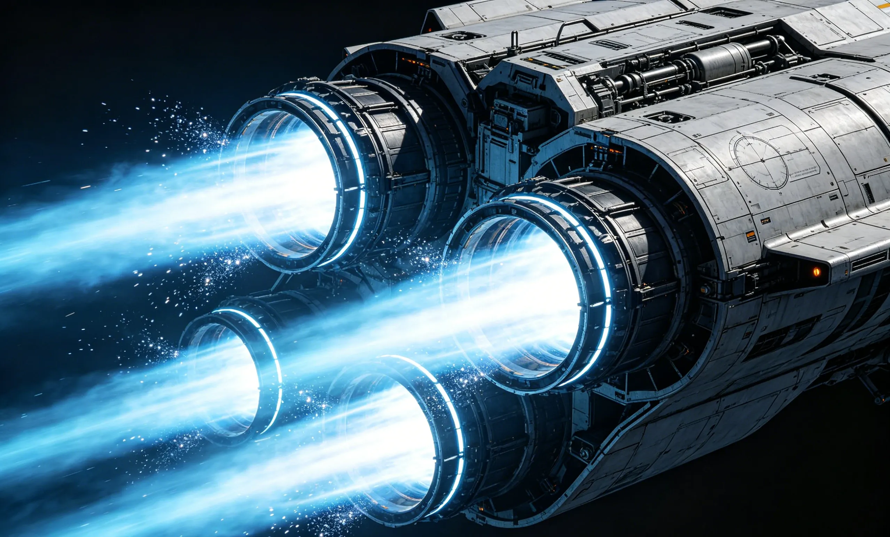
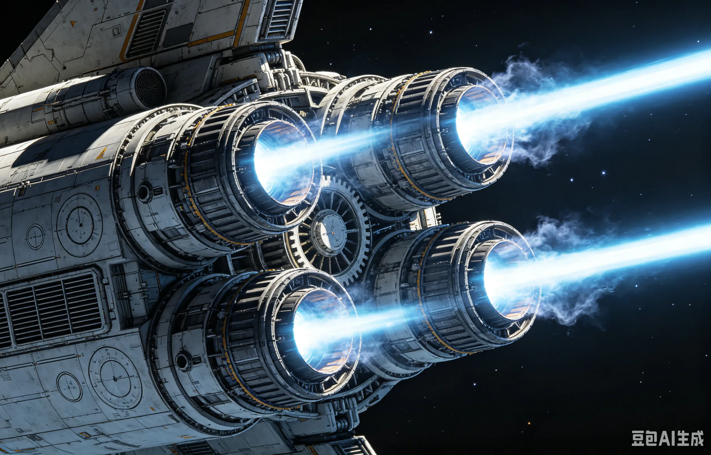

Book vs Movie
A clean hub for tracking confirmed changes, likely adaptation choices, and spoiler-safe comparison notes as official information becomes available.
Compare Adaptation NotesTimeline, characters, science, Rocky, Astrophage, book-to-screen changes, and nerdy interactive tools for curious readers.
How Project Hail Mary connects to real-world space exploration
Humanity's return beyond Earth orbit — the real mission closest to PHM's deep-space journey.
Orion, Europa Clipper, ISS, Mars rovers, JWST — explore the missions shaping our space future.
Astrophage vs nuclear propulsion, Spin Drive vs ion engines — how PHM's science stacks up.
Deep dives into the real science behind PHM's most fascinating concepts.
Orion spacecraft, SLS, Lunar Gateway, nuclear propulsion — the tech making PHM less fictional.
From Apollo to interstellar — a visual journey through humanity's space exploration timeline.
Follow the crisis from the first strange solar observations to the final moral choice on Erid.

A strange infrared trail points scientists toward a solar-scale threat.
A global emergency project moves faster than normal politics can handle.
A one-way interstellar mission leaves Earth with humanity's last practical hope.
First contact becomes a working partnership instead of a cosmic spectacle.
The ending turns survival science into a story about loyalty and repair.
Short, spoiler-aware profiles built for readers searching for Rocky explained, Eva Stratt explained, and Ryland Grace character analysis.
A survival story wrapped around memory, guilt, humor, and problem-solving.

The book's breakout character: practical, brilliant, loyal, and gloriously alien.
A ruthless organizer whose moral ambiguity powers many fan debates.
Hard sci-fi ideas explained in accessible language, with clear lines between book logic, real science, and speculation.
Energy storage, infrared light, and why the premise feels so sticky.

How the mission turns fictional biology into propulsion logic.

Ammonia, pressure, senses, and the delight of non-human design.
Try a lightweight mass-energy conversion inspired by Astrophage.
Explore the real missions and technology that bring Project Hail Mary's vision closer to reality.
A clean hub for tracking confirmed changes, likely adaptation choices, and spoiler-safe comparison notes as official information becomes available.
Compare Adaptation NotesA non-spammy sci-fi desk setup angle: stress toys, STEM culture, space textures, and fan-friendly gift ideas with affiliate disclosure ready.
Visit Needoh ZoneSupport the original creators through mainstream retailers, libraries, and official viewing platforms. No PDFs, ripped files, or unofficial streams here.